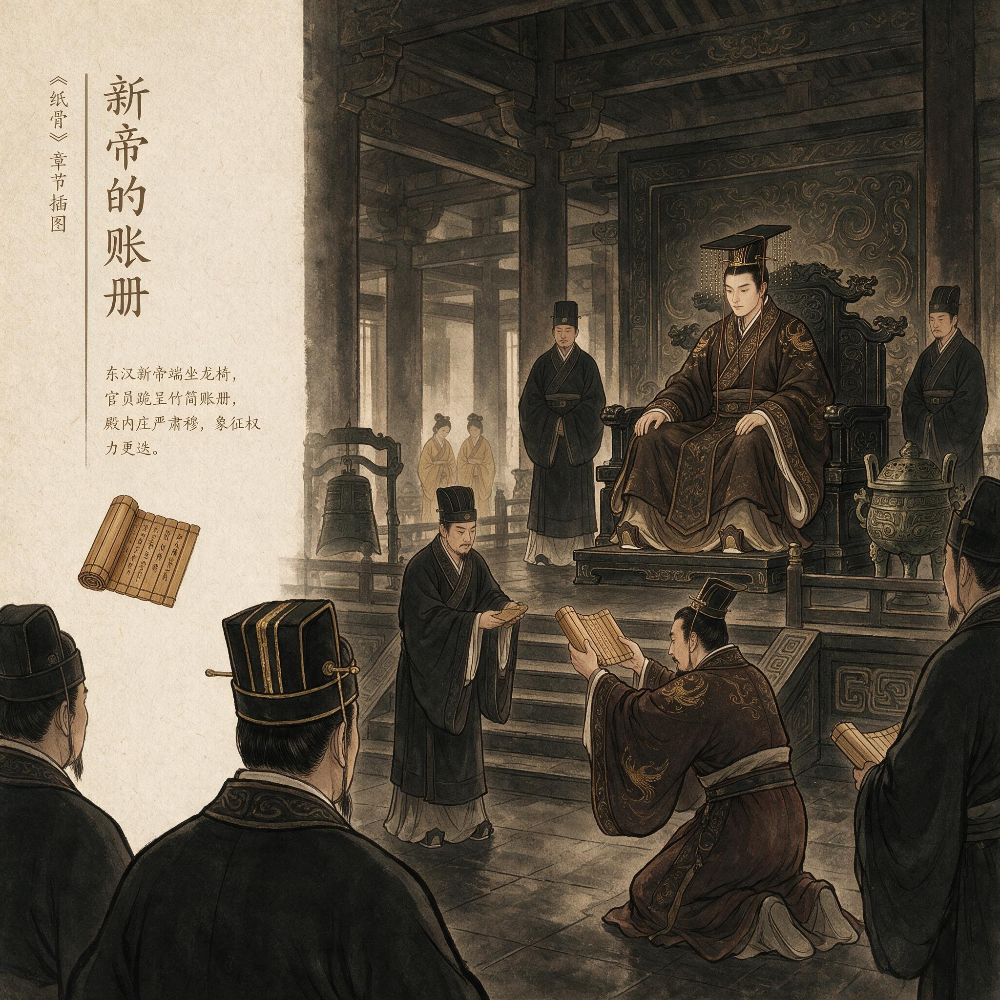

第 19 章
新帝的账册
钟声从北宫方向漫过来时，蔡伦仍站在尚方署院中那棵老榆树下，掌心那点潮湿还没散尽。他数到第七下便不再数了，这声音他听了三十几年，早该像自己的呼吸一样熟悉，可今日每一下都像敲在脊柱上，一节一节往下沉。尚方署院墙外有马蹄踏过石板，蹄铁擦出短促的火星般的声响，随即被更重的车辙声吞没。
他没有回头。铁镇纸还在案上，压着那卷尚未提交的技术参数。纸页边缘被晨风掀起一角，又落回去，拍在梨木案面上，轻得像一个人翻了个身。蔡伦能听见身后坊里石臼的闷响，一声接一声，混在早班的锤打声里，没有停过。
这很好。工坊只要还在转，尚方署就还活着；尚方署只要还活着，他就还不算一个已经被除名的人。
但这只是他自己的想法。建光元年，邓太后驾崩。灵柩至今还停在长秋宫，未出殡。按制，大行皇后的丧仪要过七七四十九天，可新帝的亲政诏书已经发出去了，尚书台的令史们连夜誊抄，把“建光”两个字盖在旧年号上，像在一块旧布上刷新漆。
蔡伦在宫中见过太多这样的时刻，他清楚这意味什么：旧太后尚未入土，新朝的手已经伸进了内廷的每一个孔窍。他只是说不准那只手什么时候会伸到尚方署来。
他转过身，走回廊下。尚方署的廊柱刚漆过不久，还是上个月少府着人来刷的，朱色亮得有些刺眼。他伸手在柱面上停了一下，指尖触到未干透的漆，粘腻，像血半凝。他收回手，在衣摆上擦了一下，又继续往工坊方向走。
第一臼的匠师看见他，只抬了一下头，手上的捣杵没有停。蔡伦站在那里看了一会儿，看那些捣熟了的麻纤维在水中翻起再沉下，浊白的浆液从臼沿溢出来，流进石槽，再汇入下一步的滤水池。这条工序他闭着眼都能背出来，每一个步骤的温度、水量、捶打次数、纤维长短的比例，都在这三十年里被他一点点试出来、定下来、写下来。
前几日，他用了整整三个夜晚，把全部参数用细笔誊在纸上，一页压着一页，最后用那方铁镇纸压住。他知道这些东西一旦交出去，就不再属于他了。可他又不能不交。那卷纸是给谁的？少府？尚书台？
还是新帝亲政后新设的那套甄别旧臣的班子？蔡伦清楚，无论交到谁手里，纸上的数字都不会替他说话。纸在此刻只是纸，轻得一阵风就能掀走。它记下的那些技术，那些他以为能当护身符用的“制度资本”，在另一本账册面前，轻得没有重量。
那本账册不在任何人的案头。它只在皇帝的心里。他从未见过汉安帝翻过什么旧档，也从未听新帝在公开场合提过那件事。可他知道那件事一直悬着，像宫里那些无人敢说的秘密一样，越不说，越重。
二十余年前，他还只是一个小黄门，窦太后掌权，命他参与构陷宋贵人及其子太子刘庆。他做了。宋贵人姐妹服毒自杀，刘庆被废为清河王。后来，刘庆的儿子刘祜被立为帝，就是今日的天子。这件事，蔡伦从没忘记过。
不是因为他有良心，而是因为他必须记得。在宫里，忘记一件自己做过的事，等于把刀柄递给别人。
他后来在尚方监作秘剑时，常对匠师们说，刀剑的血槽不能太深，深了容易断；也不能太浅，浅了放不出血。说这话的时候，他的手总是很稳。
此刻他站在工坊门口，听着臼声，忽然觉得喉咙里堵着什么东西，像一块浸了水的破布，怎么也咽不下去。
他走进石臼房旁的小间，给自己倒了一盏水。水是凉透了的，杯壁凝着一层细密的水珠。他喝了一口，舌尖触到水的涩味，像是这尚方署井里打上来的水不知从什么时候起也变了味道。他放下杯子，看见自己的手指在袖口外露着，指节上仍有几道陈年的刀痕，是年轻时在耒阳铁官家里留下的，后来入宫，又在尚方监作时添上新的。
这双手做过太多事。就是这双手，替窦太后写了那份诬告的状子。可他又想，如果再来一次，他还会不会做？
蔡伦没有往下想。他从来不允许自己往回看，往回看的人在宫里走不远。何况，那本账并不是他今天才欠下的。他欠了二十多年，只是以前有利息可以付，有太后可以替他挡。邓太后在时，没有人会翻这笔账，因为翻出来，等于翻了窦太后、翻了先帝，等于把整个内廷的权力源流都翻过来。
可邓太后不在了。现在，皇帝亲政了。蔡伦听见外间有脚步声，是小吏来送今日的物料单。
他接过来，扫了一眼，都是尚方署日常支取的麻头、破布、树皮、石灰、清水，数量比上月少了两成。
少府在收紧口子。他没有多问，只点了点头，把竹简搁在案上。小吏退出去时，脚步很急，像怕在尚方署多待一刻。
尚方令。龙亭侯。秘剑监作。这些头衔在邓太后活着的时候，像三道锁链，把他锁在权力核心的外围，安全，稳定，不可轻动。可现在这三道锁链正在变成三条绳索，一条套在脖子上，两条捆在手上。
他心里清楚，新帝身边那些人不会放过他。不是因为他做了尚方令，不是因为他封了侯，不是因为他监作秘剑。而是因为他曾经是那场旧案的执行者。而他最近开始怀疑，自己几十年来把心思都放在纸和剑上，是不是在给自己铺路，还是在给自己掘墓。
工坊里的臼声忽然乱了一下，像有人失手打翻了什么。蔡伦抬头看去，一个年轻匠师正蹲在地上收拾散落的麻渣，两个年长些的匠人在旁看着，谁也没说话。
蔡伦走过去，弯腰捡起一块掉在石缝里的捣杵头，放回原位。他拍了一下年轻人的肩，让他继续。那孩子抬起头，眼里有惊惶，像做错了事怕被赶出去。蔡伦没有责备他，只是说：“手上要稳。臼里的是纸，不是石头。”
他转身离开时，听见臼声重新整齐起来，一下一下，像一只巨大的心脏在坊墙内跳动。这声音他听了三十年，从未像今天这样清楚过。
蔡伦回到自己的值房，在案前坐下。窗纸上落着一只飞虫，翅膀抖了几下，又飞走了。他摊开一卷空白的竹简，提起笔，想写点什么，可笔尖悬在半空，迟迟没有落下。
他想起自己年轻时在耒阳铁官家里，跟着父亲看铁水从炉中流出，红色的光映在泥墙上，像一条活着的蛇。父亲说，铁在火里是软的，出了火就硬了；人不一样，人在火里硬，出了火才软。他当时不懂。
现在他懂了。他现在就是出了火的人。入宫那年，他大概也就十一二岁。家里把他送进来，不是因为天灾，不是因为犯罪，而是因为铁官家的儿子在宫里更容易找到一条生路。耒阳地方不大，铁官虽是个小吏，到底还沾着“官”字。蔡伦记得离家时，母亲没哭，只往他怀里塞了一块用油纸包着的麦饼，硬邦邦的，后来他走了三天路，饼在路上就吃完了。入宫之后，他先做杂役，再升小黄门，因着识字会算，渐渐被上面的人看中。
窦太后用他，是因为他这样的人没有外戚根基，用起来顺手。他帮窦太后做事，让自己活下来，也让自己在宫里站住了脚。
后来窦太后倒了，邓太后起来。蔡伦没有被清算，反而成了邓太后的得力助手。
为什么？因为他有用。因为他能把尚方署管得井井有条，能做出精良的秘剑，能改进造纸术。邓太后的时代需要这些，要这些器物来彰显朝廷的气度，来维系各地工坊的运转，来证明这个由太后临朝的世界依然在前进。蔡伦提供的，正是这种前进的证据。
可他也清楚，邓太后用他，不等于信他。太后只是需要他。而他也只是需要太后。他们之间没有情分，有的只是制度上的彼此成就。
他常常想，如果有一天太后不在了，自己还有什么用？这个问题，他问了自己很多年，直到今天才真正听见答案。
尚方署的一切都在继续。臼声继续，锤声继续，水流继续。可尚方署的主人已经不在了。这里所谓的主人，不是蔡伦，而是那个赋予他权力的人。而新帝亲政后，要做的第一件事，就是告诉所有人：旧太后的人，不能再用。
蔡伦把笔放下，没有写一个字。当天下午，少府果然来人了。来的不是少府卿，而是一个年轻的主簿，姓第五，是少府新近提拔上来的。他穿着青绶官服，站在尚方署门前，先是不进去，只让随从把少府的尚书令史和两个黄门安排在门外等候。
蔡伦从工坊出来时，正看见那个第五主簿站在老榆树下，负手仰头，像在数树上的叶子。“蔡侯。”第五主簿转过身来，拱了拱手，脸上带着那种新进之人见到旧朝元老时特有的恭谨与疏离。
他不是来兴师问罪的，至少现在不是。可蔡伦一眼就看出来，这种人最难对付——年轻，谨慎，背后有人，巴不得你主动犯错。蔡伦回礼，请他入内。
第五主簿落座后，先称赞尚方署的器物做得精，说这次奉少府之命，来核查这几年秘剑监作和造纸工坊的物料出入。他说的是“核查”，不是“清查”，可这两个字在今日的语境里已经没有分别。“少府诸公以为，大行太后丧期，百工之费当有所节。”第五主簿说，语速不快，每个字都像从文书里刚拿出来，“尚方署历年支取物料，涉及钱粮颇多，宜及早造册，以备考。”
他说话时，眼睛扫了一下蔡伦身后的案牍架子。那里堆着三十年来的工坊记录，竹简、木牍、纸卷混在一起，有些已经发黄，有些还新得发脆。蔡伦知道他想要什么。“尚方署的物料账，每岁都已报少府。

新帝登基，官员呈递账册
AI 生成插图，非史实影像。
”蔡伦说，声音平静，“若要造册，少府留档中自有存卷。倘若还要细细核对，尚方署也可再抄一份送过去。”
第五主簿笑了笑，说：“蔡侯说的是。只是少府近日人手紧，诸事须得过细。上面点了尚方署的名，下官也不敢怠慢。所以还要请蔡侯说个方便，先交出日常生产记录，尤其是近三年造纸与铸剑的。”
蔡伦沉默了一会儿。窗外的臼声依旧响着，像一则不受打扰的旧闻。他站起身，走到案前，抽出三卷已经备好的竹简，用麻绳捆了，递给第五主簿。这三卷是他在前一天连夜整理出来的物料记录，每一项都有数字，每一笔都干干净净。第五主簿接过，展开一卷看了几眼。他的目光停留在其中一排数字上，眉头动了一下。蔡伦不知道他是不是看出了什么，也不想知道。“这就是近三年的全部？”第五主簿问。“这是尚方署留档的底账。”蔡伦说，“至于最后一批生产记录，还在我案头压着，尚未造卷。”
第五主簿抬起头，看着蔡伦，像在判断这句话有几分真。他当然知道蔡伦说的是那批技术参数，那份比普通生产记录重要得多的东西。蔡伦把那卷纸压在铁镇纸下，全尚方署的人都知道。少府这次来，真正想拿的，恐怕不只是生产账目。可第五主簿没有追问。他合上竹简，站起来，朝蔡伦拱了拱手：“蔡侯辛苦。这几卷账册，下官先带回少府。改日若还有需要，再来打搅。”
蔡伦送他出门。第五主簿走到院中那棵老榆树下时，忽然停下，回头道：“蔡侯，那树木料不错，做炭炉里的引火，想必也耐烧。”
蔡伦没接话。他看着第五主簿的背影消失在门外的车马声里。回到值房，蔡伦在案前站了很久。铁镇纸还压着那卷纸，纸边被风吹得微微卷起。浆糊的苦味从工坊飘进来，混着炭火的呛气，像一张看不见的网，把他裹在院子里。
他很清楚，少府这次来人，不是真的为了核查物料。物料从来不是问题。问题是这尚方署里坐着一个蔡伦。
一个小吏曾告诉他，新帝身边的人正在逐个甄别邓氏旧臣，先从内廷开始，再外放到各署。甄别的标准只有一条：你在邓太后时代，得到过什么，现在就得交出来什么。蔡伦得到过太多。他交不交得清？可他也知道，真正要他交出来的，从来不是这些账目。
第三夜，蔡伦没有回住处。他一个人坐在值房，点了一盏小灯，把铁镇纸下的纸卷又看了一遍。纸上密密麻麻写满了工序、参数、重量、水量、捣打次数、晾晒时间。这些字像一群沉默的匠人，站成整齐的队列，等着谁发令。它们是他最后的作品，也是他最后的屏障。可蔡伦心里明白，这卷纸救不了他。
它只会成为少府案头的一堆数字，被核过一遍，然后归档、落灰，像尚方署里那些永远没人再翻的旧账。
真正能决定他命运的，在宫廷另一侧的宫门之内。那是皇帝心里的一本账。
他想起很多年前的一个夜晚。那时他还年轻，在窦太后手下做事，宋贵人的案子刚刚了结不久。他奉命把一份证词送到中黄门。那天天黑得早，他经过北宫一处偏殿，看见里面透出灯来，有人低声在哭。他没停下，甚至没有多看一眼。
宫里这种事太多，多看一眼，就可能多一分祸端。可那哭声一直跟着他，跟了几十年。他一直以为自己已经忘了，直到此刻坐在这里，才发现那哭声从未离开过。如今那个哭的人，正是当今天子的祖母。
蔡伦没有见过宋贵人。他只见过她的名字，写在一份薄薄的状纸下面。窦太后口述，他笔录，然后有人拿去画押。那份状纸上的字，他记得很清楚，因为是他亲手写的。后来，这份状纸就成了宋贵人“巫蛊”的证据。再后来，宋贵人姐妹服毒。他常常想，如果那碗药是他端的，他这双手是不是更洗不干净？
可他又想，就算他没端过药，写状纸的手一样是手。区别只在于，一个直接杀人，一个把刀递到了别人手里。他怎么敢忘记。
他伸手去拿那盏灯，想把它移近些，可手一抖，灯油溅了出来，落在纸上，迅速洇成一片。他赶紧把纸掀起来，可已经晚了。纸上的字没有被烧掉，反而被油浸得透亮，像要从纸里浮出来。他没有去擦。油渍在纸上慢慢扩散，像一滴陈年的血，渗进纤维深处。
天亮前，寺人董萌来了。董萌是尚方署中一个老黄门，平日里管着库房钥匙。他进门时，蔡伦正把那卷纸重新压回铁镇纸下，董萌瞧见，没有作声。他等蔡伦坐下，才从袖中取出一片窄窄的木牍，递过去。木牍上没写字，只画了一道横线，下面缀着两个小点。
蔡伦接了，借着灰蓝色的晨光看了一眼，明白了。是宫中传来的消息——有人已经在皇帝面前提了“宋贵人”三个字。他没有问是谁传的，也没有问是谁提的。这些追问没有意义。该来的到底还是来了。
董萌站在一旁，脸色有些发白。他是宫里的老人，知道这三个字一旦在皇帝面前被重新提起，意味着什么。
他想说什么，嘴唇动了动，到底没说。“尚方署这几日的活，还是照常。”蔡伦先开口，声音与往日没什么两样，“你替我看着库房，尤其是新入库的麻料，要防潮。今年秋雨多，纸张燥不起来。”
董萌应了一声，站在那里没有动。蔡伦抬头看他：“还有事？”
董萌沉默了一下，低声道：“蔡侯，外头有人说，廷尉府近日要抽调旧档。”
蔡伦没说话。“章帝年间那些老档，都从石渠阁调出来了。”董萌的声音更低了，“说廷尉府的人去了兰台，连着找了好几天。”
蔡伦的手在袖中慢慢握紧，又松开。过了好一会儿，他才说：“廷尉府要查什么旧档，是他们的事。尚方署只管造作，别的不要打问。”
董萌不敢再说什么，低头退了出去。天已经大亮。尚方署院中，匠师们已经到齐，正在搬料、滤浆、洗絮。几个年轻的把一捆捆浸透的麻皮从水槽里捞起来，搭在竹架上，水珠一滴滴往下坠，在晨光里闪着冷光。
蔡伦站在门口看了一阵，像在看一个已经不属于自己的世界。他知道，董萌说的“旧档”，就是宋贵人案。
廷尉府重启旧档，说明皇帝已经决定翻案了。不是翻给宋贵人听，而是翻给邓氏旧臣们看。
这二十多年的案子一旦翻过来，当年经手的人，一个也跑不了。蔡伦就是当年的经手人。
他走回案前，看着那方铁镇纸。铁镇纸是老物件了，从尚方署设立时就在，上面铸着“尚方”两字，阳文，已经磨得有些圆润。他每天写字都要用它压着纸角，这一用就是三十年。今天，铁镇纸下面压的不是普通文书，而是他半生的心血。
那八个字，他用了三十年才写透。可现在，这八个字要跟着他一起掉进那本旧账里去了。铁骨在火，纸骨在水。他总觉得这是自己对半生技艺的总结。可今日看来，这句话更像是对自己命运的判词。铁冷了，会脆；
纸湿了，会烂。他不知道自己是从哪一天开始，从“火”走到了“水”。窗外传来一声尖锐的哨响，是宫门外校尉在整队。蔡伦走到门口，看见一队羽林军的影子从尚方署外墙闪过，往北宫方向去了。他没有跟出去看。他知道那队人马是去换防的，还是去抓人的，对他来说已经不重要了。重要的是，他这个龙亭侯，这个尚方令，这个被后世要写进书里的人，此刻还站在这里。可他能站到几时？
他转身，在值房里找到那面铜镜，照了照自己的脸。镜子里的人已经老了，鬓角全白，眼角往下垂，脸上的肉有些松。他盯着镜中的脸看了一会儿，忽然觉得陌生。这张脸和耒阳铁官家的那个少年，早就不是同一个人了。
他放下镜子，走到墙边，看那排排挂着的刀具：直刀、环首刀、匕首、书刀，每一件的形制都经过他的手，每一件都能在他闭眼时画出完整的尺寸。他曾以为这就是他的一生，用火与铁锻造出可以传世的器物。可到头来，他真正传下去的，恐怕只是那卷压在他案头的纸。而纸，恰恰是这宫中最轻、最不能被用来阻挡什么的东西。
他想起几日前，少府第五主簿临走时说的那句话。树，引火。他当时没有接，现在却听懂了。
尚方署院中那棵老榆树，三十年来一直在那里，他看着它抽芽、长叶、落叶、再抽芽。现在，有人告诉他，这棵树可以做炭炉的引火。木在火里烧成炭，炭在炉里燃成火。这世界上的东西，归根结底都是同一种东西，在不同的火候里换着名字。蔡伦知道，他就是那棵树。曾经给人遮阴，如今要被人砍了做柴。
第五日，宫中传出发丧的钟鼓声。邓太后的灵柩出长秋宫，往东园方向去。尚方署的门都关着，匠师们被责令暂停一日工，说是大行太后发丧，百工不得作声。蔡伦站在尚方署门内，从门缝里看出去。丧队很长，素白的旗帜在风里翻卷，像一场下不完的雪。可他只能看见其中一小段。钟声一路响过去，远了，又像从地下浮起来。蔡伦靠在门板上，闭上眼睛。
他想到的并不是邓太后的死，而是他自己此刻的处境。太后终于出殡了。入土为安。可对生者来说，太后的入土，意味着一道门永远关上了，门后剩下来的人，要独自面对新朝的风。
他不知道自己还该不该继续待在这里。尚方署的活计停了一日，第二天才重新开工。匠师们进来时，蔡伦已把几案收拾干净，纸卷重新压好，像什么都没有发生。他站在工坊中央，看所有人各就各位，臼声、捣声、滤水声，一点一点恢复起来。
等到最后一锤敲下时，他忽然觉得，这熟悉的声音已经不再属于他。他要交出去了。不是交少府，是交廷尉府。不是交纸，是交命。他明白这个分别。少府要的是账册，廷尉府要的是命。而现在，少府的账册他已经交了，廷尉府要的那本账，他还在自己怀里藏着，等着有人来收。他又能拖多久？
蔡伦在尚方署里走了几圈，从石臼房走到滤浆池，从滤浆池走到晾纸房。每走一步，他都在看，像是替一个将要远行的人最后看一遍故乡。其实这不是故乡。他的故乡在耒阳，那里有铁矿、有炉火、有父亲、有母亲塞给他的那个硬饼。这里不是故乡，这里是他自己造出来的地方，是他用制度和手艺在宫里给自己挖出来的一个窝。这个窝，马上就要没有了。他站在晾纸房，看着木格上晾着的白纸。
阳光从高窗落下来，打在一层层纸面上，纸白得发光。他伸出手，在离纸很近的地方停住，没有碰下去。纸还在湿，还没有完全干。要再等一个时辰，这些纸才能从木格上揭下来，裁成规定的尺寸，送到该送的地方去。他等不到一个时辰。他的时间不在这里了。
他转身往外走，经过门槛时被绊了一下，人没倒，只是手扶了一下门框。门框上积了一层细灰，沾在他掌心。他拍了拍巴掌，快步朝值房走去。
值房里很静，原先放在案头的那些竹简和木牍已经清理掉了一部分，余下的整齐地码在架子上。铁镇纸下还是那卷纸，油渍已经干了，在纸上结成一块透明而光滑的痕迹。蔡伦在案前跪坐下去，把衣裾理了理，像一个准备接受朝见的人。可他的对面只有那卷纸。
他告诉自己：你今天坐在这里，还是尚方令，还是龙亭侯。等明天，或者后天，廷尉府的人来了，你就什么都不是。不但什么都不是，还会被押到狱中去，被审、被问、被记入案卷。你也会变成一本账，被后人翻来翻去。
那本账上会写：蔡伦，字敬仲，耒阳人，有巧思，监作秘剑，改进造纸，封龙亭侯。也会写：曾受窦太后指使，构陷宋贵人，后伏罪。这两段会被抄在一起，像一块木板上同时钉着铁钉和纸钉。
后世的人看到，会问：为什么他做了那么多事，最后却因为那件事而死？蔡伦没有办法回答。因为这个问题，他自己也问过，不止一次。为什么偏偏是他。
从耒阳铁官家出来的人很多。从前与他一同入宫的人，有的死在杂役房，有的被赶出宫去，有的升到黄门令，也有的卷入旧事被处死。为什么只有他，既做出了那些东西，又背上了那笔债？他曾经以为，这两者是分开的。他在尚方署里做的所有事，都只是为了活下去，为了活得更好。如今他才明白，正是他太会活了，才把自己逼进了死路。
如果当年他不在尚方署做出这些成绩，也许没有人会注意他，没有人会记得他，也许他现在还只是宫中一个不起眼的黄门，会在某个角落安然老死。可他没有。因为他做不到。他骨子里有一种耒阳铁官家带来的劲，要把东西做好，要把自己交出去。
他忽然想起一个词，是父亲说过的。那时候他站在炉前，看见铁水从出铁口冲出来，问父亲：“这铁水会冷吗？”父亲说：“会，冷了就变硬，硬得再也改不了形状。”他当时不懂什么叫“改不了形状”。现在他坐在尚方署值房里，在铁镇纸下压着自己三十年来的心血，终于明白，自己就是那铁水，是被这宫里的制度浇进同一个模子里铸出来的。那个模子，在他入宫那天就已经摆在那里，等着他流进去，冷却下来，变成今日这副模样。他再也改不了形状了。
他慢慢站起来，走到窗前。窗外，晾纸房的白纸已经被匠师们一张张揭下来，整齐地叠放在木板上。几个年轻匠师正抬着纸包往外走，大概是去交办的。蔡伦看着那些纸从窗下经过，一叠一叠，白得像是被霜覆盖。他知道，这些纸会送到少府，再分到各处官府。它们会承载诏令、文书、信件，甚至诗文。它们会被写上许多名字，其中也许会有“蔡伦”两个字，在某一卷工艺志的角落里。但此刻，它们只是纸。白纸。没有字。像一张张没有表情的脸。
他站在窗前，一直到那些纸从视线里消失。院子里空了，臼声低下去，像一个人最后咽下的那口气。天阴下来。
宫中的钟鼓声又响起来，这回不是发丧，是新帝早朝后百官退朝的信号。蔡伦没有再数。他知道，无论钟声响几下，都与他无关了。他听见那些声音像水一样漫过尚方署的墙，从他的脚底漫上来，凉得发木。
他走回案前，拿起铁镇纸，在手里掂了掂。铁很沉，像一块从地下挖出来的骨头。他把它放回去，压在那卷纸上。然后他走出值房，反身把门带上。门板合上时发出一声轻响，像一声短促的咳嗽。他站在门外，没有回头。天光从云层后漏出来，照在他花白的头发上。他就这么站着，像一尊尚未完成的铜像。
寺人董萌从廊下过来，看见他，犹豫了一下，站在几步外没敢再近前。蔡伦看了他一眼，点了点头，什么都没说，径直朝尚方署大门外走去。门外是长街，长街尽头是宫门，宫门之外是洛阳城，洛阳城之外是整个天下。他曾经以为，自己这一生能做多少事，就能走多远。现在他知道了，一个人能走多远，从来不由自己。
他停下脚步，站在尚方署外的石阶上，回头看了一眼。老榆树还在那里，树冠遮住半个院子，像一个巨大而沉默的羽盖。树下面，匠师们还在忙着，臼声又响起来，一声接一声，像这世上从未发生过任何事。他转过身，朝宫门方向走去。后面没有人叫他，前面也没有人在等。只有风从长街那头吹过来，带着从北邙山上下来的土腥气，和晚秋未落的桂花残香。